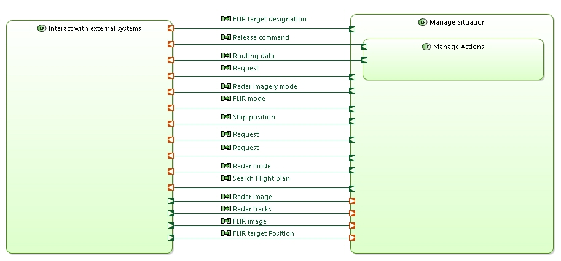

Methodological Guidance
The activity browser provides a methodological access to all key activities of Capella. It is the main entry point to a model and is both meant for beginners and power users.

Semantic Colormap
As graphical representations of elements play a key role in communication, Capella relies on a consistent colour scheme. This favours enhanced model readability for all stakeholders (architects, V&V practitioners, specialty engineers, managers, etc.).

Semantic Browser
More useful than the standard hierarchical view of the model, the semantic browser instantaneously provides the context of model elements trough meaningful queries. It is the preferred way to navigate in models and diagrams and to quickly analyse the relationships between model elements.

Computed Links
A key feature of Capella is its ability to scale and to tackle the increasing complexity of models. Capella automatically computes graphical simplifications. The information exchanges between lower-level functions are automatically displayed on higher-level functions. This relieves architects from managing intermediate information exchanges and manually maintaining consistency between several levels of abstraction. Capella also provides tag-based mechanisms allowing the graphical grouping of semantically close exchanges.


Advanced Diagram Management
- Automated contextual diagrams: Content is automatically updated according to preselected elements and predefined semantic rules
- Synchronization/unsynchronization of diagrams: Gives a fine level of control on the elements which are systematically displayed or not (Ports of Functions, Exchanges between Components, Properties of Classes, etc.)
- Filters help improve readability of diagrams by selecting display options and automatically hiding / showing elements.
- Layers are means to customise the graphical rendering of elements in a diagram based on different concerns (e.g. speciality viewpoints).

Model Validation
Capella organizes model validation rules in several categories: Integrity, design, completeness, traceability, etc. Architects can define validation profiles focusing on different aspects. Whenever possible, quick fixes provide quick and automated solutions.

Semantic delete with preview
Capella provides instant impact analysis of deletions.

Replicable elements and libraries
Replicable Elements are mechanisms allowing the
easy reuse of (possibly multi-root) model parts
. A Replicable Elements Collection (REC, for Record) is a definition of an element / set of elements which can be reused in multiple contexts / configurations / models. A Replica (RPL, for Replay) is an instantiation of a REC. RECs can be packaged in libraries, which can be shared between several projects.
Modelling Patterns
Recurring modelling schemes can be captured with patterns.

Transition System/Subsystems
The automated and iterative transition between system and subsystems is a great help for managing several levels of engineering. The contract and model of the subsystems are computed from the system. Ideally, subsystems stakeholders are involved in co-engineering activities at system level before the transition occurs.
Multi-Viewpoint
Capella provides basic demonstration viewpoints (Mass, Cost and Latency). Combined with Kitalpha, it also provides an API for viewpoint development and a contributive comparison view to evaluate the performance of candidate architectures according to different concerns.

HTML output
Sharing models with all stakeholders is essential in model-based systems engineering. Publishing and sharing HTML versions of models helps make models THE reference of all engineering activities.